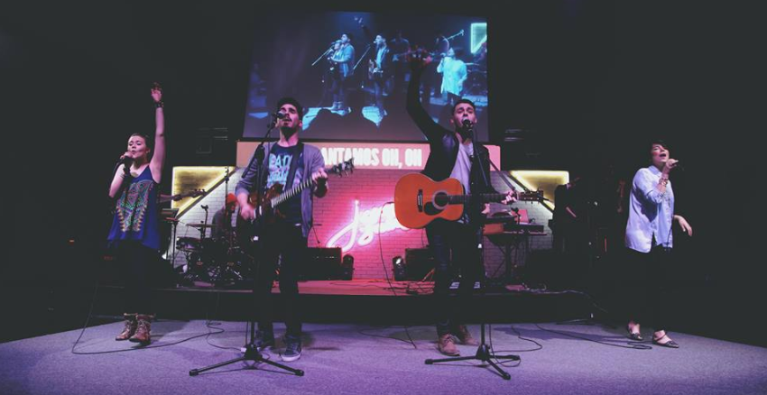

Un poco de historia
Está compuesto por 11 integrantes, dirigidos por Steven y Lluvia Richards, Kim Richards y Louie Ábrego. Fundada el 19 de abril de 2012 Nacido de la pluma de Steven Richards, líder del grupo, y su esposa, Lluvia, Un Corazón «late» por mostrar a Jesús glorioso ante los ojos de muchos, sea a través de música, mensajes, eventos o lo que sea que esté en puerta al momento; crear música para este tiempo manteniendo el mensaje del Evangelio al centro es parte de su ADN. Toda la música de la banda, es una propuesta de adoración fresca y sólida para la iglesia joven en el mundo de habla hispana. Su anhelo es que personas en todo Latinoamérica sean expuestas al evangelio y el amor de Cristo mientras la iglesia es edificada! La banda mexicana Un Corazón, cuya llegada a CanZion fue anunciada recientemente, escribe en su historia el debut internacional de su música